.png)

.png)
.png)
.png)
.png)
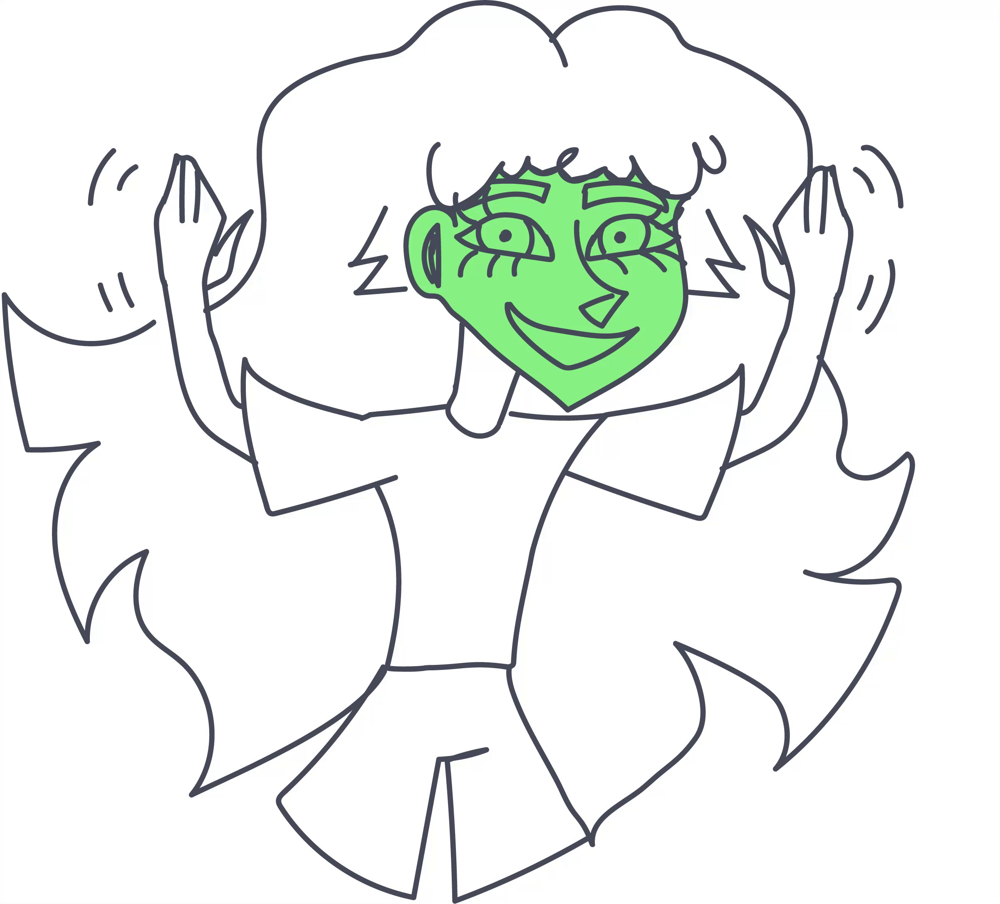

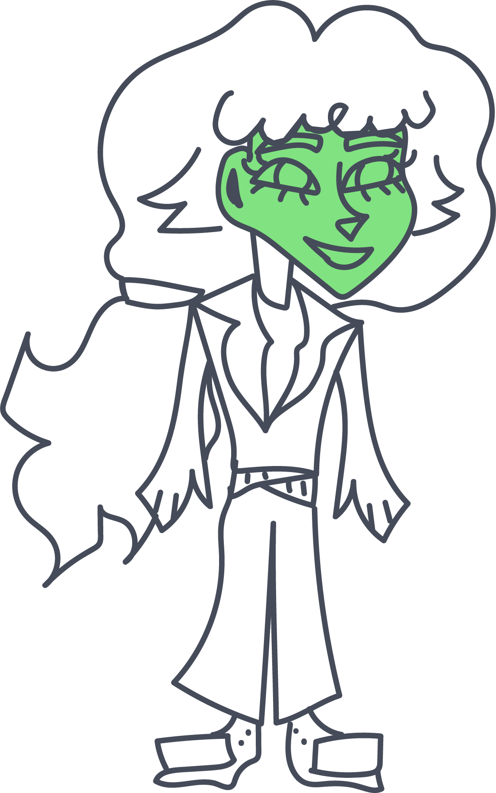
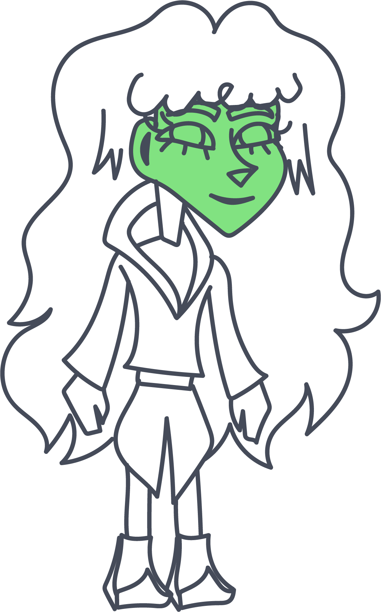
Современная теория о четырех типах темперамента базируется на наблюдениях Гиппократа, однако объяснение деления людей на группы носит более научный характер. Оно включает в себя глубокое понимание физиологических и психологических механизмов, лежащих в основе этих различий. Исследования доказывают, что каждый тип связан с особенностями нервной системы, которые влияют на реактивность и адаптивность человека в разных условиях. Люди, принадлежащие к разным типам, различаются скоростью и интенсивностью психических процессов, уровнем активности и эмоциональной устойчивости.
Сангвиник
Термин "сангвиник" происходит от латинского слова sanguis, что означает "кровь". В древности люди верили, что четыре биологические жидкости отвечают за определение темперамента человека. Считалось, что люди с избытком крови обладают сангвиническим темпераментом, который характеризуется веселым, общительным и оптимистичным характером.
В наше время сангвиник определяется как тип личности, характеризующийся позитивным взглядом на жизнь, высоким уровнем энергии , разговорчивостью и выразительностью эмоций.
Сангвиники сопереживают и сострадают, а также обладают сильной интуицией, которая помогает им легко распознавать людей и ситуации. Они также известны своей адаптивностью, поскольку способны легко приспосабливаться к новым ситуациям и обстановке.
Сангвиники
Сангвиникам обычно присущи следующие характеристики:
активная, но не чрезмерная жестикуляция;
хорошее настроение.
хорошее настроение. Это вовсе не означает, что человек всегда безоговорочно счастлив, но он относится к миру дружелюбно, часто улыбается и при любых обстоятельствах сохраняет оптимистичный настрой;
практичность.
практичность. Несмотря на позитивность, сангвиник по природе не благодетель, он во всем ищет выгоду для себя;
жажда внимания и общения
Плюсы
жизнерадостный; все схватывает на лету; общительный, энергичный; высокая работоспособность; умеет сохранять самообладание в разных ситуациях; легко приспосабливается к новым обстоятельствам;
излишняя эмоциональность; не выносит однообразность; быстро переключается с одного дела на другое; часто переоценивает себя и свои возможности; всегда уверен в правильности собственных решений.
Минусы
Нервная система сангвиников отличается тремя характеристиками:
Сильная.
Они способны выдерживать длительные эмоциональные нагрузки, стресс, почти всегда сохраняют ресурсное состояние, поэтому в работе отличаются высокой эффективностью, производительностью. Они легко способны действовать в ситуации цейтнота, сохраняют спокойствие, когда всё горит и другие хватаются за голову или впадают в ступор, отчаяние.
Уравновешенная.
Уникальная черта сангвиников в том, что с сильной нервной системой им досталась способность управлять своими чувствами. Они способны быстро заводиться, легко поддаваться ярким интенсивным эмоциям, ловить настроение толпы. Вместе с этим они так же легко возвращают себе контроль, могут не поддаваться своей эмоциональности, перестать смеяться, когда ситуация изменилась, не впадать в панику, не зависать в депрессивных эмоциях.
Подвижная.
Нервная система сангвиников легко адаптируется к новым обстоятельствам, что позволяет им менять стратегии поведения, выбирая наиболее подходящую. Сангвиники не из тех, кто боится покидать свою зону комфорта, страшится перемен или сложных задач, потому что у их психики, как правило, хватает ресурсов, чтобы со всем этим справиться.
Сангвиники


Подтипы
Сангвиник-холерик
Сангвиник-флегматик
Холерик
Холериками называют ярких, энергичных, импульсивных людей с коротким путем от мысли до её реализации. Возбудимые, увлекаемые и идейные, они склонны к проявлению лидерских качеств. Холерики любят внимание, общительны, но не всегда могут оставаться стабильными – перепады настроения сильно сказываются на их состоянии, продуктивности, концентрации.
Холериками
Холерики
Из четырех типов темперамента холерики считаются самыми возбудимыми и эмоциональными. В отличие от заряженных и гиперактивных сангвиников, они менее стрессоустойчивы – любое событие сказывается на настроении холерика. Они достаточно отходчивые и легко переключают внимание, однако уровень самоконтроля может проседать, а многие условности и правила им скучны.
.gif)

Холерикам обычно присущи следующие характеристики:
энергичность и проактивность.
энергичность и проактивность. Холерикам скучно сидеть на месте, им требуется постоянное движение, смена картинки вокруг и высокие скорости процессов;
скорость и импульсивность.
скорость и импульсивность. Холерикам свойственно быстро говорить, быстро ходить и быстро принимать решения – вне зависимости от того, что на кону. Думать и анализировать холерику нелегко, в состоянии ожидания он вялый и раздражительный;
эмоциональность и переменчивость.
эмоциональность и переменчивость. Постоянно меняющееся настроение, зависимое от случайных факторов, вспышки раздражения и недовольства, склонность к повышенным тонам и самопроизвольная регуляция до спокойного состояния могут создавать периодические сложности в коммуникации.
экстраверсия и разговорчивость.
Плюсы
волевой; энергичный; решительный; работоспособный.
вспыльчивый; нетерпиливый; раздражительный.
Минусы
Нервная система холериков отличается тремя характеристиками:
Сильная.
Холерик — это человек, тип темперамента которого не позволяет сидеть на месте ни минуты. Он постоянно находится в движении, берется сразу за несколько дел и с блеском справляется с ними. Бывает, что встретив серьезное сопротивление на пути к цели, он быстро охладевает к ней, найдя более доступный вариант. Но в большинстве случаев человек покричит, сопровождая возмущение активной жестикуляцией, и отправится решать проблему.
Холерик
Неуравновешенная.
Спонтанные эмоциональные всплески и быстрый переход от покоя к возбуждению. Энергичность сочетается со слабым самоконтролем. Он непредсказуем, легко впадает в состояние аффекта, и вероятность перехода границ в общении при этом значительно повышается. Но таить зла он не будет, сразу высказывая собеседнику все претензии и считая, что инцидент исчерпан.
Подвижная.
Холериков характеризуют как многозадачных, быстрых и нетерпеливых людей. Они играючи принимают важные решения, поэтому им хорошо дается стресс-менеджмент и работа, где приходится находиться под большим давлением, но нужно быстро реагировать на ситуацию. Они ставят перед собой амбициозные цели, продуктивно работают на их достижение, заражая всех вокруг своим энтузиазмом.
Холериков


Подтипы
Холерик-сангвиник
Холерик-меланхолик
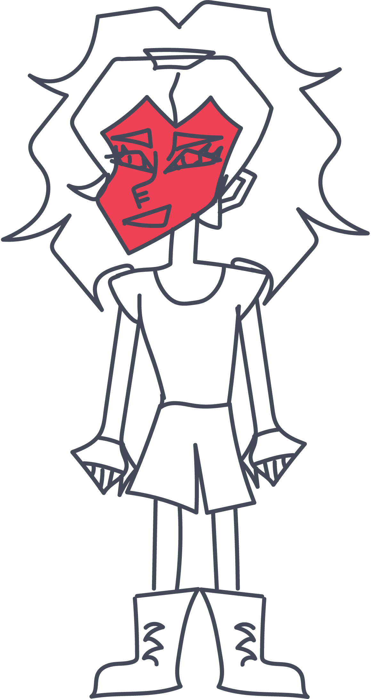
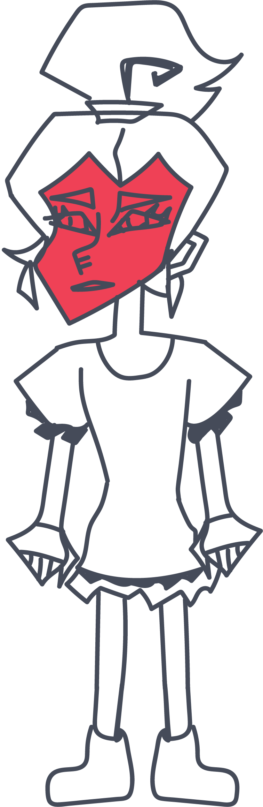
Флегматик
Флегматики — это люди, которые, как правило, не спешат с решениями, предпочитают обдумывать все тщательно, прежде чем действовать. Они стабильны, надежны и склонны к рациональному мышлению.
Флегматики
Люди с флегматическим темпераментом обладают спокойным, расслабленным характером. Флегматики очень наблюдательны и хорошо понимают мотивы и намерения людей. Они не склонны принимать импульсивные решения и известны своим рациональным мышлением.
Они могут испытывать трудности с принятием решений, и им может потребоваться много времени, чтобы прийти к какому-либо выводу. Они также могут испытывать трудности с выражением своих эмоций и могут показаться холодными или отстраненными.
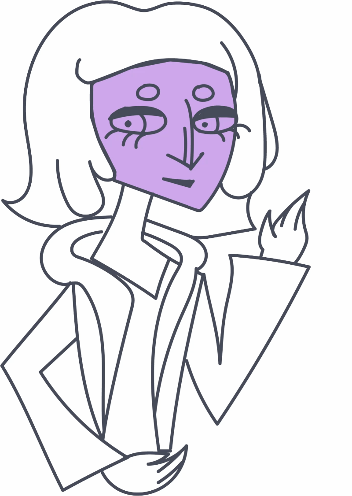

Флегматикам обычно присущи следующие характеристики:
спокойствие и уравновешенность.
спокойствие и уравновешенность. Флегматики редко бывают раздражительны или эмоциональны. Они сохраняют хладнокровие в любых ситуациях;
медленная реакция.
медленная реакция. Флегматики предпочитают тщательно обдумывать все, прежде чем действовать. Им нужно время, чтобы привыкнуть к новым людям и ситуациям;
невозмутимость.
невозмутимость. Флегматики не склонны паниковать или волноваться. Они обычно спокойны и расслаблены;
практичность.
практичность. Флегматики предпочитают практические решения и действия. Они избегают ненужного риска и предпочитают проверенные методы.
стабильность.
стабильность. Флегматики — это надежные люди, на которых всегда можно положиться. Они стабильны в своих эмоциях и поведении.
Плюсы
спокойный; рациональный; стабильный; стресоустойчивый.
пассивный; малоэмоциональный; не проявляет энтузиазма к новым идеям; медлителен в принятии решений.
Минусы
Нервная система флегматиков отличается тремя характеристиками:
Сильная.
Они уравновешены, не слишком экспрессивны, тщательно обдумывают свои слова и решения, стараются избегать рисков. Флегматики обладают отличной способностью к концентрации и могут часами выполнять рутинные задачи, не испытывая усталости. Им присущи методичность и системный подход. Они любят упорядоченность, всегда готовые сортировать и организовывать.
Флегматики
Уравновешенная.
Флегматик умеет отключаться от стрессовых ситуаций, не бегая от реальности и не погружаясь в фантазии. В какой-то момент он осознает, что нервничать не имеет смысла, и переключает внимание на то, что действительно важно.
Флегматик
Инертная.
Флегматический темперамент обусловлен преобладанием процессов торможения в центральной нервной системе. Это определяет физическую медлительность, спокойствие и некоторую инертность поведения флегматиков: они говорят, ходят и выполняют работу размеренно, не торопясь. Вместе с тем, они способны к глубокому и длительному сосредоточению на решаемых задачах. Флегматики ценят стабильность и предпочитают придерживаться отработанных схем поведения, поэтому с трудом воспринимают перемены.
Флегматики


Подтипы
Флегматик-сангвиник
Флегматик-меланхолик
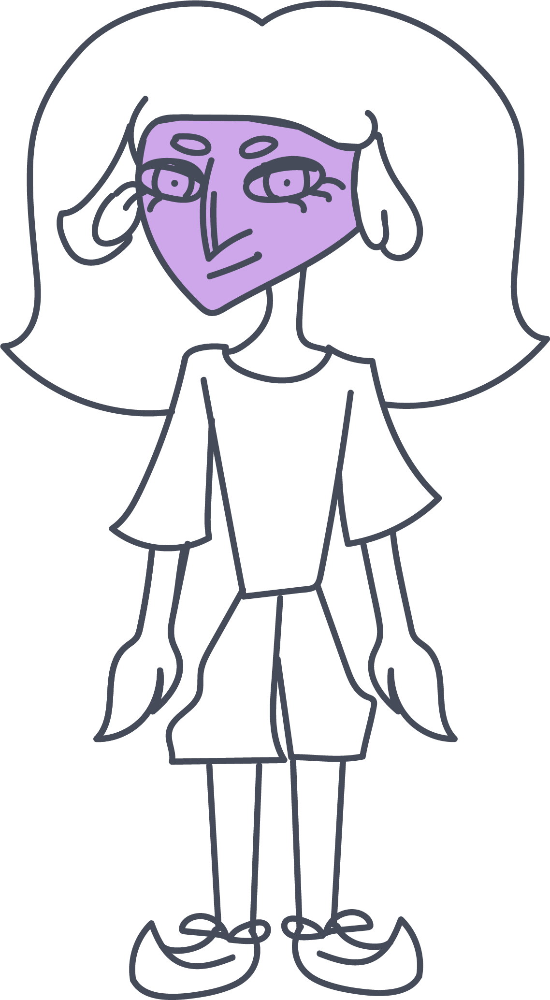
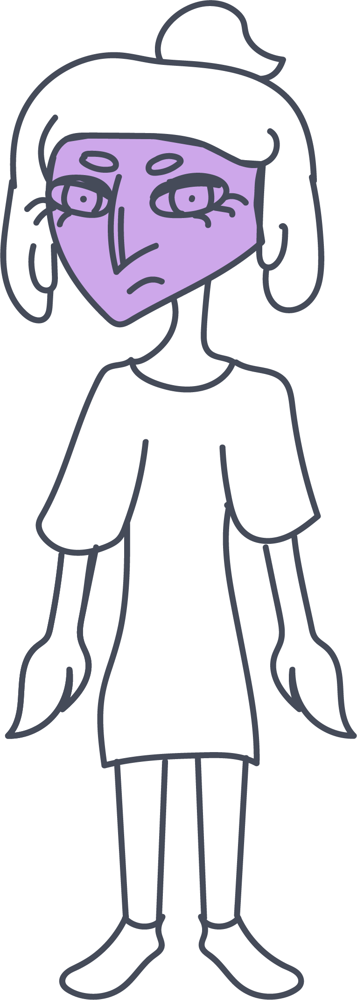
Меланхолик
Меланхолики — это личности с богатой эмоциональной палитрой и тонким восприятием окружающего мира. Они погружены в свои чувства, переживания и размышления, что делает их невероятно чуткими и глубоко эмпатичными.
Меланхолики
У таких людей нервные процессы характеризуются слабостью возбуждения и торможения. Это означает, что меланхолики быстро истощаются под воздействием внешних раздражителей, будь то громкие звуки, интенсивное общение или внезапные перемены.
Из-за высокой чувствительности нервной системы меланхолики нередко реагируют на стресс тревогой, растерянностью или ступором. Они склонны долго переживать любые неприятные ситуации, переосмысливая произошедшее снова и снова.
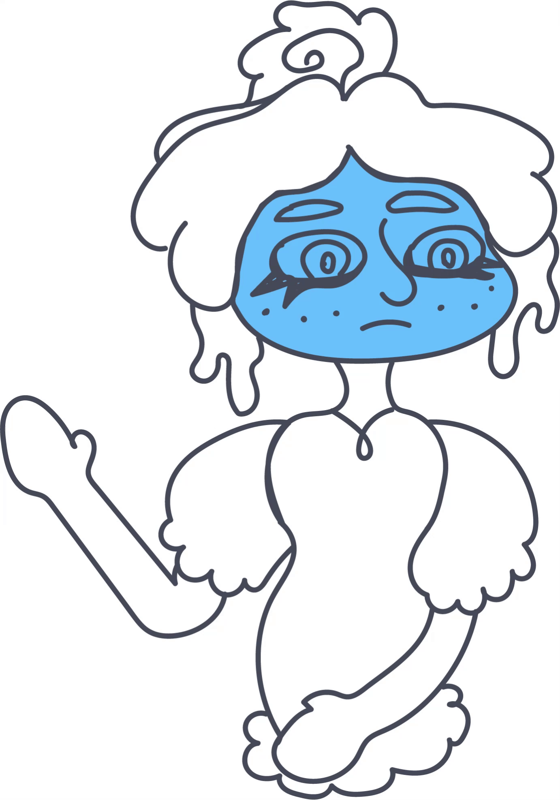

Меланхоликам обычно присущи следующие характеристики:
эмоциональная уязвимость.
эмоциональная уязвимость. Из-за особенностей психики любая эмоциональная активность, будь то радость или грусть, быстро истощает внутренние ресурсы меланхолика. Им необходимо больше времени на восстановление и обретение гармонии;
внешнее спокойствие.
внешнее спокойствие. Меланхолики производят впечатление людей с ровным и уравновешенным характером. Внешний облик меланхоликов отличается спокойствием и редко выдает накал эмоций, которые на самом деле могут бушевать внутри;
гиперэмоциональность.
гиперэмоциональность. Меланхолика легко ранить — даже мимолетный недобрый взгляд или неосторожное слово способны надолго поселить в его сердце тревогу или обиду;
перепады настроения.
перепады настроения. Эмоциональный мир меланхоликов полон контрастов. Они способны испытывать как яркую радость, так и глубокую печаль, причем смена настроения может происходить мгновенно.
Плюсы
тонкая душевная организация; способность к эмпатии; внимание к деталям; усердие в работе.
склонность к пессимизму и тревожности; сложности в общении; эмоциональная неустойчивость; перфекционизм.
Минусы
Нервная система меланхоликов отличается тремя характеристиками:
Слабая.
Меланхолики часто склонны смотреть на жизнь через призму пессимизма. Они могут ожидать худшего даже в позитивных ситуациях, что нередко мешает им наслаждаться моментом. Кроме того, пессимизм меланхолика нередко приводит к самоограничениям — они боятся рисковать и принимать важные решения, предполагая неудачу. Постоянные переживания о будущем или даже о прошлом приводят к повышенному уровню стресса, бессоннице и другим психологическим проблемам.
Меланхолики
Неуравновешенная.
Меланхолики подвержены резким перепадам настроения. Внешне спокойные, они могут внезапно впасть в грусть или испытывать тревогу без видимой причины. Эти эмоциональные колебания нередко становятся источником конфликтов или недоразумений с окружающими, которые не всегда понимают причину столь бурных эмоциональных реакций.
Меланхолики
Инертная.
Меланхолики избегают ненужных контактов, что иногда приводит к упущенным возможностям. Их замкнутость может восприниматься окружающими как холодность или недружелюбие, что порой становится причиной недоразумений. Вместо того чтобы оставить проблемы позади, такие личности склонны долго размышлять о произошедшем, часто виня в этом себя.
Меланхолики
Подтипы
Меланхолик-холерик
Меланхолик-флегматик


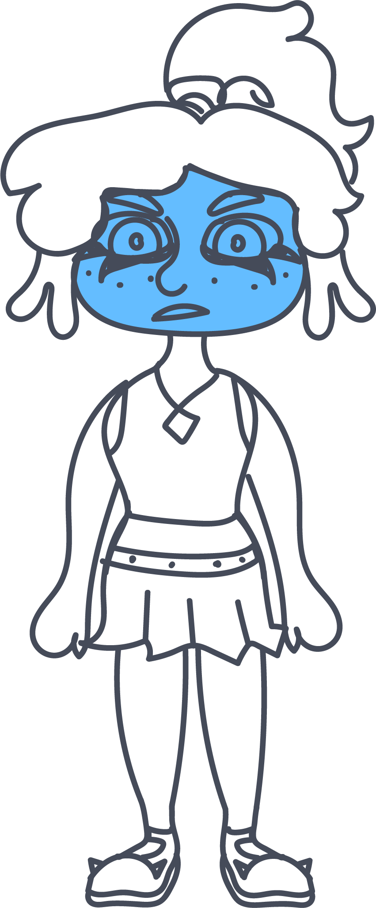
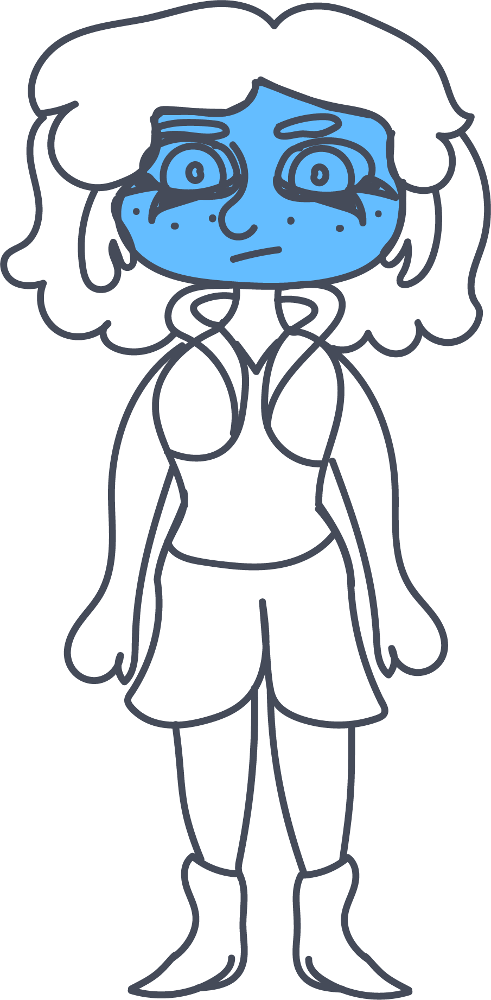

vk.com/vhutein